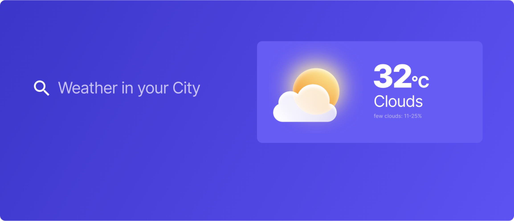

What's the weather like today?

How to Clone?
Follow all these steps to clone the web app:
- Clone the Webflow website
- Clone the Wized project, and paste the Wized embed code into the cloned Webflow website
- Create an account on OpenWeather, and get your API key
- Clone the Airtable database, and get your API key
- Update API keys in My Apps inside the Wized Configurator
Additional information
- Webflow is used to build the web app UI.
- Wized is used to transform the UI into a functional web app.
- Using Wized, we connect the OpenWeather's REST API to fetch real-time weather data of any city in the world.
- For this project, Airtable is used as the database to store custom weather icons.
- Using Wized, we match & retrieve (as per the user's request) a custom weather icon and display it in the UI.